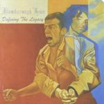

| Artist: | Flamborough Head |
| Title: | Defining The Legacy |
| Label: | Cyclops CYCL 096 |
| Length(s): | 68 minutes |
| Year(s) of release: | 2000 |
| Month of review: | [03/2001] |
| 2) | House Of Cards | 9.16 |
| 3) | Garden Of Dreams | 12.35 |
| 5) | Impulse | 11.17 |
| 7) | Mind-sculpture | 7.58 |
The next track, House Of Cards, moves along the same lines as the previous track, with a nicely audible bass, strong melodic guitar work, brimming organs and stately church organ. For the most part this is an enjoyable track with all-out sung vocals, returning to quietude later on. There seems to be a link between the lyrics of this and the previous track. In fact, it seems to be about the same person.
The continuation into Garden Of Dreams seems at first a bit too jolly sounding, then the band seems to make for a Saga sound, but as it turns out they simply alternate the two, making for a bombastic, but also disjointed opening. Driving rhythm guitar accompanying strongly melodic keyboards do leave me with a sense of being bombarded with too many different passages. The parts in themselves are quite nice, but the way they are strung together has an arbitrariness to it. This does not mean that the song does not have some potent passages, very symphonic and also very good. Like the accompanying bio says: the band puts more in one song than many do in one album, and I concur, but I also have to say that putting so much in a song is not necessarily good for the song. For instance the goal of the break into merry fluting part at the end of the track escapes me. At the end the main themes of the track reappear.
Assassin is not a cover. It opens moodily with keyboards and harpsichord. The vocoded vocals of Schaaf work well here. Later, he sings in his own voice again, and the melodies there I like less, a bit too easy. Again, the lyrics are none too happy. The instrumental part that follows will remind many of Marillion in their Script days, but there's more meandering going on. The pumping Genesis like organ intermezzo is very good again and later on the Kelly like keyboard runs return. During the sarcastic Showtime! part we reach the intensity of say Roger Waters.
Impulse takes a long times before we finally end up at the not so friendly lyrics. The music itself is quite bouncy and the vocal line reminds me of Robert Palmers Addicted To Love. Emotional progressive with strong guitar work by Cents on a waltz like tune. Time for a jolly interlude playfully played on piano, the guitar setting in right after, a warm organ sound in the back. From out of nowhere the Kelly like keyboards return, a bit too abrupt here.
Bridge To The Promised Land opens with a string orchestra, in the style of the opening of Subterranea. The song is a rather mellow affair, slightly classical in style and sounds quite friendly on the whole. A bit too mellow on the whole.
After the applause we conclude with an instrumental, Mind Sculpture. The mellowness of the previous track is also present here. After a few minutes of this, the song goes to mid-tempo, but the band goes about it a bit too careful on this track. A bit more bite would have been nice here. These last two tracks are less interesting than the previous ones.